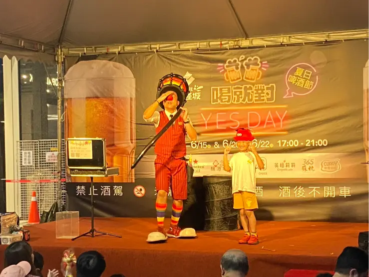
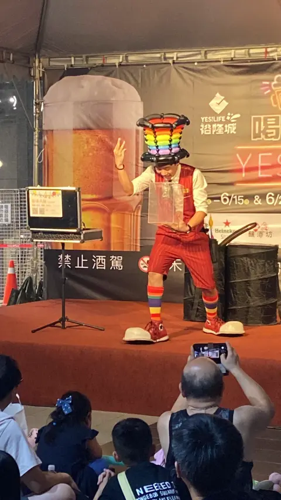

新店裕隆城夏日啤酒節紀錄｜吹破可樂瓶 × 親子氣球魔術秀
夏夜最熱血的魔法時刻｜氣球大叔 Sony 用歡笑引爆新北市商場高人氣
📍 地點：新北市 新店區 裕隆城 (YES!LIFE)
新店裕隆城焦點：夏夜啤酒節的快樂催化劑
隨著 2025 年暑假正式揭幕，新北市指標性商場 新店裕隆城 盛大舉辦「夏日啤酒節」。氣球大叔 Sony 受邀擔任舞台重頭戲演出，身穿鮮豔服裝、頂著招牌彩虹氣球帽亮相。在微風徐徐的夏夜，Sony 透過 高強度的街頭魔術互動，將啤酒節現場轉化為親子同樂的大型遊樂園，成功吸引了全場民眾的目光與駐足。

絕無冷場：吹破可樂瓶魔術引爆全場高潮
本場演出的「神級瞬間」發生在 Sony 展示獨家絕活——「嘴巴吹破可樂瓶」那一秒。當瓶口氣壓瞬間炸裂，視覺震撼結合爆笑效果，讓現場上千名觀眾先是屏息、隨後爆發出如雷般的掌聲。這不僅是技術的展現，更是 Sony 多年街頭演出經驗累積下的節奏精華。

- ✨ 最強吸睛力： 獨家特技演出，創造商場活動最 viral 的討論度。
- 🤝 跨世代連結： 讓不喝酒的親子家庭也能沉浸在啤酒節的歡樂氣氛中。
- 🎭 職人級互動： 專業魔術引導，確保活動在戶外大型場域依然熱度爆表。
「吹破可樂瓶那秒，全場為他起立鼓掌！氣球大叔 Sony 真的把裕隆城的夏夜變得魔幻又溫暖。」 — 啤酒節參與民眾一致好評分享
結語：商場慶典與戶外市集的引流專家
氣球大叔 Sony 擅長處理 萬人場域、商場快閃、官方大型節慶。我們深知如何將「表演」轉化為「品牌記憶與人潮流量」。無論您的活動是在 新店裕隆城、圓山花博、松菸 或任何戶外廣場，Sony 都能提供兼具質感與震撼力的定身秀。想為您的活動預約爆點？歡迎聯繫諮詢。
🔥 更多指標性大型活動推薦案例：
- 👉 官方大型活動：台北納涼電影院｜市府官方魔術互動秀 × OX遊戲驚喜
- 👉 萬人指標慶典：台中后里樂器節｜震撼爆破秀 × 街頭魔術亮點紀錄
- 👉 指標景點演出：圓山花博 MAJI 集食行樂｜氣球魔術秀 × 孩子驚喜畫像
- 👉 品牌一站式：IKEA 台中 11 週年慶｜高人氣親子氣球互動秀紀實
💡 關於新店商場戶外氣球魔術表演的常見問題
- Q: 在新店裕隆城這類大型商場舉辦戶外活動，氣球魔術表演的場地需要如何配置？
- A: 針對裕隆城等大型商場的戶外廣場，氣球大叔 Sony 會自備高功率的專業行動音響設備，不需依賴現場複雜的硬體。我們建議保留約 3x3 公尺的演出腹地，讓魔術互動（如吹破可樂瓶）能有安全的視覺距離，同時確保圍觀群眾的安全與動線順暢。
- Q: 像夏日啤酒節這樣主要針對成年人的活動，安排氣球大叔表演適合嗎？
- A: 非常適合！許多成年人參加商場節慶活動時會帶著孩子同樂。Sony 的表演不僅有讓孩童瘋狂的造型氣球，更有如「嘴巴吹破可樂瓶」等具備高度視覺震撼與幽默感的大型街頭魔術，能成功打破年齡界線，讓大人小孩都沉浸在啤酒節的熱烈氛圍中。
- Q: 如果戶外商場活動遇到天氣不穩定（如夏日午後雷陣雨），表演可以移到室內進行嗎？
- A: 當然可以。氣球與魔術表演具備極高的機動性，若遇天候不佳，Sony 能隨時配合主辦單位將演出移至商場中庭或室內走道進行。我們的表演內容能根據空間大小彈性調整，無論室內外都能保證演出品質，讓活動不受天氣影響。
🎈 正在尋找新店商場戶外氣球魔術表演嗎？
如果您也希望為您的活動創造像現場一樣爆棚的人氣與驚喜，氣球大叔 Sony 是您的首選！我們專注於提供高品質的互動演出與情境佈置：
- 百貨商場活動：中庭舞台秀、假日聚客、週年慶造勢。
- 品牌行銷推廣：新品發表會、門市開幕、VIP 客戶派對。
- 親子家庭日：企業家庭日、社區晚會、私人慶生派對。
📅 本文整理於 2025 年 6 月 15 日，完整紀錄真實活動現場氛圍。